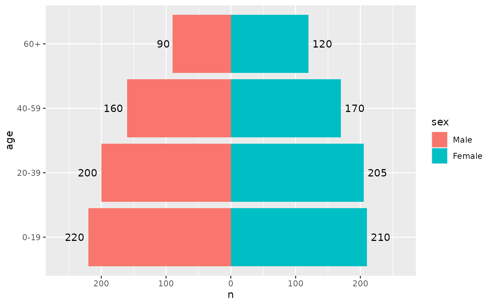
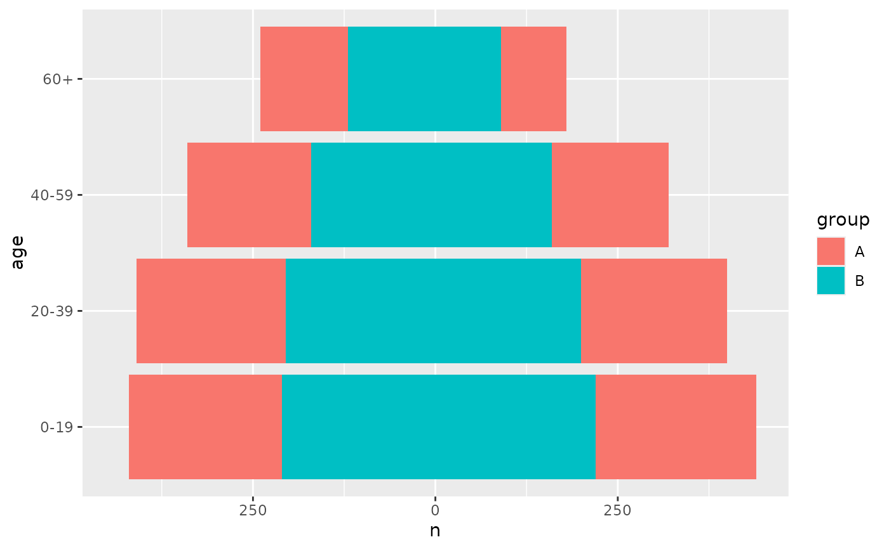

position_pyramid() draws the rows of one side in the negative direction,
so that the two sides of a pyramid extend away from a shared age axis, and
stacks subgroups within each side. It works with any layer, so bars, labels,
points and lines all land on the same side.
Arguments
- left
The value of the side variable drawn on the left. Defaults to the first level when the side variable is a factor, and to the first value in sorted order otherwise.
- stack
If
TRUE, rows that share an age group and a side are stacked away from the centre, as inggplot2::position_stack(). IfFALSE, they overlap, which suits a comparison layer drawn over the bars.- vjust, reverse
Passed on to the stacking. See
ggplot2::position_stack().
Aesthetics
position_pyramid() understands the side aesthetic, which assigns each
row to one of the two sides. When side is not mapped, the side comes from
fill, and failing that from colour. Map side explicitly when fill
shows subgroups, for example aes(fill = region, side = sex). Rows with a
missing side are drawn on the right.
Signed values
The data you supply stays positive. Inside the plot, values on the left side
are negative, so a manual reference line or limit on that side carries a
minus sign: geom_vline(xintercept = -100) or
scale_x_continuous(limits = c(-500, 500)). coord_pyramid() shows the
axis labels without the sign; with another coordinate system, use
scale_x_continuous(labels = abs).
Orientation
The axis that does not hold age is the one that gets mirrored. Age is the
discrete axis when only one of them is discrete, and the y axis when both
are continuous, so a pyramid is horizontal unless age is mapped to x. A
mapped hjust (or vjust in a vertical pyramid) is mirrored as well, so
text justified away from the bar end on the right does the same on the
left. A fixed hjust set outside ggplot2::aes() is not mirrored.
See also
geom_pyramid() for the bars of a pyramid, and coord_pyramid()
for its axes.
Examples
library(ggplot2)
pop <- data.frame(
age = factor(rep(c("0-19", "20-39", "40-59", "60+"), 2)),
sex = factor(rep(c("Male", "Female"), each = 4), c("Male", "Female")),
n = c(220, 200, 160, 90, 210, 205, 170, 120)
)
# Any geom can be mirrored
ggplot(pop, aes(x = n, y = age, fill = sex)) +
geom_col(position = position_pyramid()) +
geom_text(aes(label = n, hjust = -0.2), position = "pyramid") +
scale_x_continuous(expand = expansion(mult = 0.15)) +
coord_pyramid()

# Subgroups stack within each side
pop2 <- rbind(transform(pop, group = "A"), transform(pop, group = "B"))
ggplot(pop2, aes(x = n, y = age, fill = group, side = sex)) +
geom_col(position = position_pyramid(left = "Female"))
